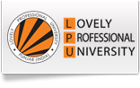

welcome
amaraneni nithin
(12217229)


teacher on leave
today's time table
messages
Roll No - RKOC21A19 (Term:122231)
Group - 1 (Section:KOC21)
Programme - P132::B.Tech.
(Computer Science & Engineering)
eat a variety of different food.eat plenty of fruits,vagetables and starchy,fibre.cut back on fatty foods.eat sensible amount-don't be greedy!
| Time | Course | Room Number | Att.Status |
|---|---|---|---|
| 08-09 AM | MTH174 | 38-917 : LPULive | Present |
| 09-10 AM | CSE326 | 25-403 : LPULive | Present |
| 10-11 AM | CSE111 | 26-601A : LPULive | Not Marked |
| 11-12 AM | ECE249 | 25-101 : LPULive | Present |
cource code :- CSE111
teacher name : mr.Gaurav Pushkarna
section : KOC21
day span : full day
cource code :- INT108
teacher name : mr.Bhupinder singh
section : KOC21
day span : full day
REGARGING PROJECT FILE
BY: ISHA(DEC 03,2022
project submission for your section is BY: ISHA(DEC 03,2022
12 December it means upto 12 December
you neet to upload your project file
on ums after 12th portal for online
submission will be closed and rest viva
will be conducted in class. content for
report writing
1.introduction to your project
2.features of your project
3.flowchart
4.respective screenshots of project
5.code for the screenshots
REGISTER NOW FOR CROWDSOURCE LEARNING COMMUNITY - LPU
By: Harjeet Kaur (Nov 10, 2022)
By: Harjeet Kaur (Nov 10, 2022)
Dear Student,
We at Google Developer Student Club - LPU are
delighted to announce the Crowdsource Learning Community Program.
Why are you still waiting?
Announcements
**Selection Trails for Yoga (Men/Women) Team Nov 28,2022
The Division of Sport is conducting trials for Yoga Players for All India Inter University Yoga (Men/Women) Event. Interested students can show up on the below mentioned schedule.
Game: Yoga (Men/Women)
Venue:- Block 18, Room number 601
Date:- 20th December 2022 (Monday).
Name of Faculty :- Dr Neelam Sharma
Timing:- 3PM to 5PM(No Duty Leave)
For More information contact Division of Sports, Block 47, Room No 203
**New Blood Donation Camp on 1st December 2021 Nov 30,2022
Dear All, Do you feel you don't have much to offer?
You have the most precious resource of all: the ability to save a life by donating blood! Help share this invaluable gift with someone in need. Rarely do we get a chance to serve the society especially if it is a matter of saving some one's life.
Luckily in December 2022 each one of us is getting a chance to save three lives. A Voluntary blood donation camp is being organized by Inner Wheel Club, Sri Ram Hospital Jalandhar & “LPUNSS units Aahavan | Sankalp ”, an initiative of Department of Community Services, Division of Youth Affairs, Student Welfare Wing, LPU.
Do you know that,
* Every 3 out of 10 people in India need blood.
* 75% of the voluntary donors in our country donate only once per year.
* This shortage can be overcome if just 2% of our country's youth donate blood.
Date: 1st December, 2022
Time:8:00 A.M. - 6:00 P.M.
Venue 1: Block 27
Venue 2 :Uni Hospital
**Memory and Concentration Lab 'A road to positivity, personality development and holistic health with Psycho-Neurobics' (Ref. No. LPU/DSR/IC/221130/001)
(12/9/2022 12:36:05 PM)
Happiness cell invites all students and faculty of Lovely Professional University to Visit Bk 8, Room 208 and use the Concentration and Memory Lab
We all are aware that as human beings we are capable of performing amazing physical feats
Do you
· Want to reduce mental stress and increase your concentration level and memory power?
· Want to enhance your performance and productivity coefficient?
· Want to be happy healthy and content?
Psycho- Neurobics is a practical science to enhance concentration power, positivity in life and healing for physical impairments.
Benefits of Psycho-Neurobics practice,
· Improves Concentration and focus of mind.
· It enhances memory and recollection power thereby enhances your performance in the exams.
· Psycho-Neurobics practices have been found to be very effective in drug de addiction.
. It relaxes cells and tissues in our body.
· Releases stress, anxiety and restores peace of mind.
· It helps to cure depression and cures brain and nerve disorders.
· It heals the organs, keeps body health and eliminates many hereditary diseases.
· Helps us get rid of chronic fatigue syndrome
· Relieves migraine pain
· It improves eye vision.
Meet Dr Mahesh Dogra to learn more ….
Tuesday & Saturday: 3.30pm - 5.30pm
With more than 30 years of experience in various industries,
Dr.Mahesh Dogra is a Ph.D. in Vedic Science & Psycho Neurobics from Yoga Samskrutham University - Florida , USA
An MBA in Self-Management & Crisis Management from Tamil Nadu Sports University & M.Sc. in Psycho Neurobics.
Uploaded By:
Office of HOD
Division of Student Relationship
*This is computer generated notice, not requiring signature